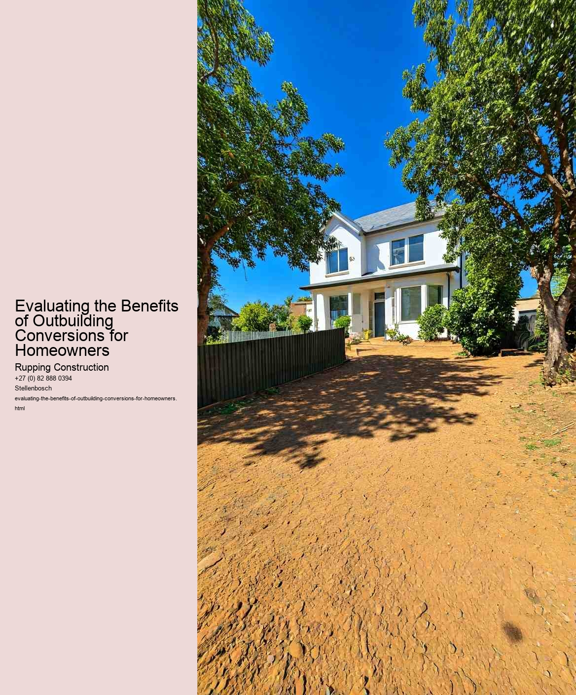

Outbuilding conversions have become a popular trend among homeowners looking to maximize their property's potential. Whether it's a garage, shed, or barn, transforming these spaces into functional living areas can offer substantial financial benefits. Understanding these advantages can help homeowners make informed decisions about their properties.
One of the most significant financial benefits of outbuilding conversions is the potential increase in property value. Real estate markets often favor homes with additional living spaces, such as guest suites, home offices, or rental units. By converting an outbuilding, homeowners can enhance their property's appeal, making it more attractive to prospective buyers. This added value can yield a return on investment that far exceeds the initial costs of conversion.
Furthermore, outbuilding conversions can create new income streams. Homeowners may choose to rent out the converted space, whether as a long-term rental or a short-term vacation rental. With the rise of platforms like Airbnb, many homeowners have successfully turned their outbuildings into profitable rental units. This additional income can significantly offset mortgage payments or contribute to other household expenses, making the conversion financially advantageous in the long run.
Energy efficiency is another financial benefit of outbuilding conversions. Many outbuildings can be retrofitted with modern insulation and energy-efficient systems, reducing utility costs. Homeowners can save money on heating and cooling, which adds to the overall financial viability of the conversion. Additionally, some local governments offer incentives or tax breaks for energy-efficient upgrades, further enhancing the financial appeal.
Moreover, converting an outbuilding can reduce the need for additional construction. Instead of expanding their homes or building new structures, homeowners can utilize existing outbuildings to meet their needs. This not only saves on construction costs but also minimizes disruption to the property and surrounding environment. The financial savings from avoiding new construction can be substantial, making the conversion a more appealing option.
In summary, the financial benefits of outbuilding conversions for homeowners are multifaceted. From increasing property value and generating rental income to reducing utility costs and avoiding new construction expenses, these conversions can provide significant financial returns. As homeowners seek ways to enhance their living spaces and make the most of their properties, outbuilding conversions emerge as a smart investment strategy that can yield lasting benefits.
The evaluation of outbuilding conversions has become increasingly relevant in today's real estate market. Homeowners are constantly seeking ways to enhance the value of their properties, and converting an outbuilding can be an effective strategy. The impact on property value and marketability is a critical aspect to consider when contemplating such renovations.
Firstly, the conversion of outbuildings, such as garages, barns, or sheds, into functional living spaces can significantly increase the overall value of a property. Potential buyers often look for additional living space, whether it be for a home office, guest suite, or recreational area. By transforming an outbuilding into a stylish and practical space, homeowners can appeal to a broader audience. This added versatility can make a property stand out in a competitive market, ultimately leading to higher offers.
Moreover, the marketability of a home can improve considerably with a well-executed outbuilding conversion. In an era where remote work is becoming more commonplace, the demand for dedicated home office spaces has surged. A renovated outbuilding can provide a quiet and private environment, catering to this growing need. Similarly, families may seek extra living spaces for teenagers or elderly relatives. By highlighting the unique features of the converted space, homeowners can market their properties more effectively, attracting buyers who are specifically looking for these amenities.
Additionally, the aesthetic appeal of a well-designed conversion can enhance the overall charm of a property. Curb appeal plays a significant role in attracting potential buyers, and an outbuilding that complements the main house can create a cohesive and inviting atmosphere. Landscaping and thoughtful design can transform an ordinary structure into an eye-catching feature, further boosting the property's value.
However, it is essential for homeowners to consider the costs associated with these conversions. While the potential increase in property value can be substantial, the initial investment must be justified. Homeowners should conduct thorough research and seek professional advice to ensure that the transformation aligns with market trends and buyer preferences. High-quality materials and craftsmanship can lead to a more significant return on investment, making it crucial to approach the project with careful planning.
In conclusion, outbuilding conversions can have a profound impact on property value and marketability. By creating additional functional spaces that cater to contemporary needs, homeowners can enhance their properties appeal in a competitive real estate market. However, careful consideration of costs and market demands is essential to maximize the benefits of such conversions. Ultimately, with the right approach, homeowners can turn outbuildings into valuable assets that contribute to their overall property investment.
Sustainable living and eco-friendly practices are increasingly becoming essential considerations for homeowners looking to reduce their environmental impact while enhancing their quality of life. One innovative approach that aligns with these principles is the conversion of outbuildings, such as sheds, garages, or barns, into functional living spaces. This practice not only offers a unique solution to increasing living area but also embodies the essence of sustainability.
Outbuilding conversions can significantly reduce a homeowners ecological footprint. By repurposing existing structures, homeowners minimize the need for new construction materials, which often require extensive energy to produce and transport. This approach conserves resources and reduces waste, making it a more sustainable option than building new structures from scratch. Furthermore, many outbuildings are already equipped with essential infrastructure, such as water and electricity, which can be utilized in the conversion process, further decreasing the environmental impact.
In addition to the environmental benefits, converting outbuildings can also provide homeowners with valuable additional space. Whether transformed into a home office, guest suite, or rental unit, these converted spaces can enhance the functionality of a property. This added space can be particularly beneficial in urban areas where living space is limited and expensive. Moreover, by creating a rental unit, homeowners can generate additional income, which can be reinvested into sustainable practices or used to offset mortgage costs, making the conversion a financially wise decision as well.
Aesthetic considerations also play a role in the appeal of outbuilding conversions. Many outbuildings have character and charm that can enhance the overall aesthetic of a property. Homeowners can embrace eco-friendly design principles, such as incorporating natural materials, energy-efficient windows, and sustainable landscaping, to create a space that is not only functional but also visually appealing. By blending modern design with the rustic charm of outbuildings, homeowners can create unique living spaces that reflect their personal style while adhering to sustainable living practices.
Moreover, outbuilding conversions can foster a stronger connection with nature. By integrating green roofs, rainwater harvesting systems, or solar panels into the design, homeowners can create eco-friendly spaces that promote sustainability. These features not only reduce reliance on traditional energy sources but also encourage a lifestyle that values and respects the environment.
In conclusion, the conversion of outbuildings presents a multifaceted opportunity for homeowners to embrace sustainable living and eco-friendly practices. By repurposing existing structures, homeowners can reduce their ecological footprint, increase their property's functionality, and create beautiful, unique spaces that reflect their values. As society increasingly prioritizes sustainability, outbuilding conversions stand out as a practical and innovative solution that benefits both homeowners and the environment.
When homeowners consider converting outbuildings-such as garages, sheds, or barns-into usable living spaces or rental units, understanding the legal and regulatory landscape is crucial. These conversions can offer numerous benefits, including increased property value, additional income streams, and enhanced living space. However, navigating the legal and regulatory considerations is essential to ensure a smooth and compliant process.
First and foremost, zoning laws play a pivotal role in determining what can be done with an outbuilding. Local zoning ordinances dictate how properties can be used and what types of structures can be built or modified. Homeowners must check if the zoning classification allows for residential use of the outbuilding. In some cases, a property may be located in a zone that restricts residential conversions, requiring homeowners to seek a zoning variance or special permit. This process can be time-consuming and may involve public hearings, making it imperative to start the research early.
Building codes are another critical aspect to consider. These codes set the minimum standards for construction and safety, ensuring that any conversion meets structural integrity, fire safety, and accessibility requirements. Homeowners should consult with local building authorities to understand the necessary permits and inspections required for the conversion. Failing to comply with building codes can lead to fines, forced removal of the conversion, or issues when selling the property in the future.
Additionally, homeowners must be aware of potential homeowners association (HOA) rules and regulations if their property is part of an HOA. These organizations often have specific guidelines regarding alterations to property structures, including outbuildings. Even if local laws permit the conversion, HOA rules may impose restrictions or require approval before proceeding with any changes.
Environmental regulations may also come into play, particularly if the outbuilding is located near protected areas, wetlands, or in a flood zone. Homeowners should investigate potential environmental assessments or permits that may be needed to ensure compliance with local and federal environmental laws.
Lastly, insurance considerations should not be overlooked. Converting an outbuilding may change the use of the property, impacting homeowners insurance policies. It is vital for homeowners to inform their insurance providers about the conversion to ensure adequate coverage and avoid potential claims issues in the event of damage or liability.
In conclusion, while converting outbuildings can provide significant advantages for homeowners, it is essential to thoroughly evaluate the legal and regulatory considerations involved. By understanding zoning laws, building codes, HOA regulations, environmental protections, and insurance implications, homeowners can navigate the conversion process more effectively. Taking the time to address these considerations not only helps in achieving a successful conversion but also protects the homeowners investment in the long run.
Checklist for Compliance in Outbuilding Construction Projects
How to Choose the Right Materials for Outbuilding Construction